| 日付 | 2008年10月12日（日） - 2008年10月13日（月） | ||||
|---|---|---|---|---|---|
| 山域 | 飛騨の山 | ||||
| メンバー | 友人（男2） | ||||
| 山行形態 | 1泊2日小屋泊 | ||||
| アクセス | 電車、バス、ロープウェイ | ||||
| ルート (Map) |
|
大学時代の友人と、御嶽山に行くことにする。
会うのは昨年の立山以来。1年に1回一緒に山に行くのが恒例になりつつある。
この時期の3000m峰は寒そうだが、紅葉はきれいそうだ。
1日目
この季節は他の登山口へのアクセスが難しくなっているので、
ロープウェイを利用したメジャールートで登ることにする。
行きの電車の乗り換えに失敗してしまい、予定より1時間遅れで乗り場に到着。
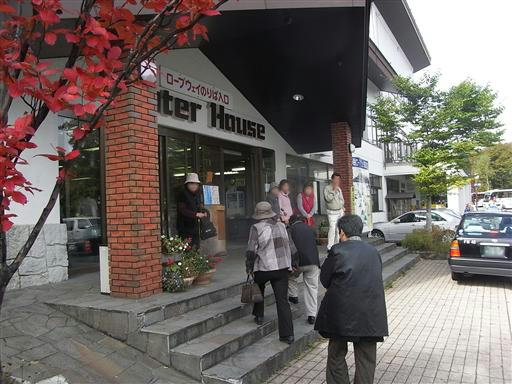
ロープウェイで一気に高度を稼ぎ、標高2150mまで到達する。
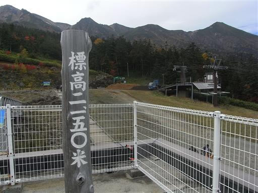
背後に大きな御嶽山が聳えている。
いくつものピークが連なっている。
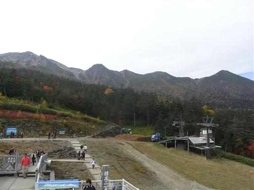
北方には乗鞍岳とその向こうに北アルプスの山々が見える。
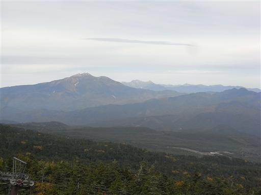
12:52 登山を開始する。
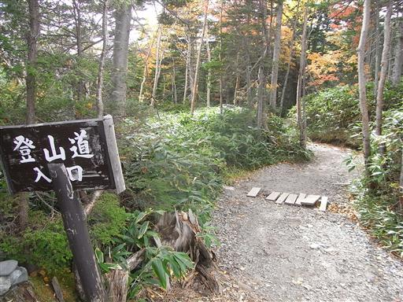
すぐに七合目行場山荘に到着。
大勢の人が休んでいるが、休憩するには早すぎるので素通り。
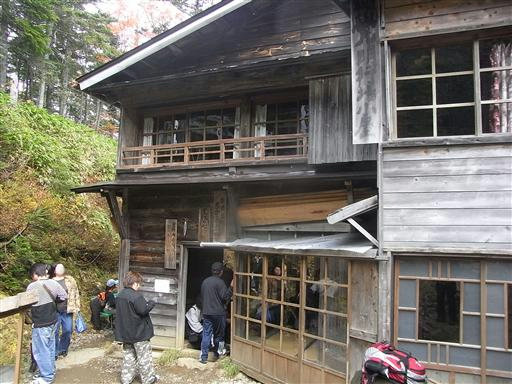
登山者（というより観光客）の数は非常に多い。
この辺りは針葉樹と笹が多く、紅葉している木が少ない。
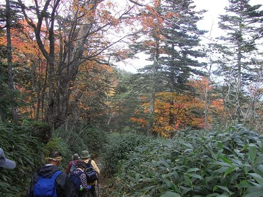
8合目の女人堂に到着。ここで小休止することにする。
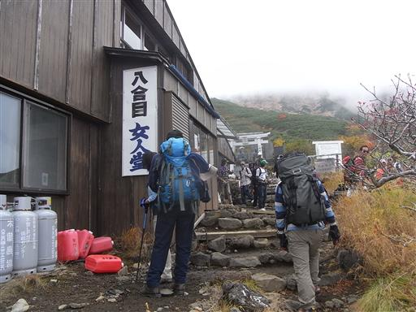
この一体は紅葉が非常に美しい。
ナナカマドが真っ赤に染まっている。
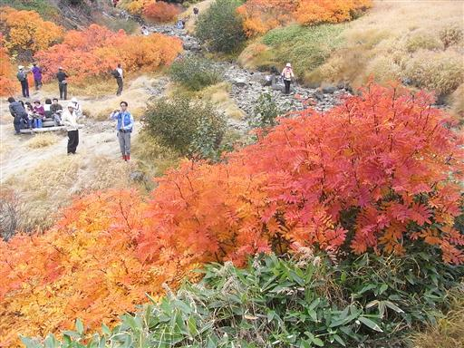
女人道から五の池小屋に向かう道に入っていく。
沢沿いの紅葉がきれいだ。
この登山道は山頂に直接向かう道ではないので、だいぶ人通りが少なくなる。
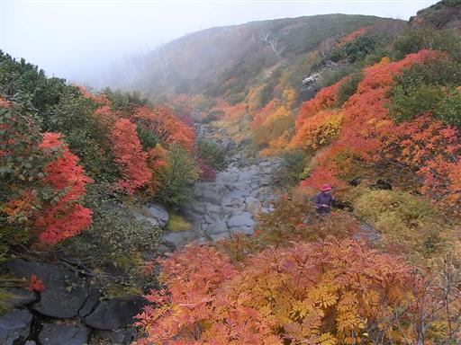
斜面は全体的に緑が多いが、ところどころに赤、黄、橙に染まった木が散りばめられている。
太陽が出ればもっときれいに見えるのだが。
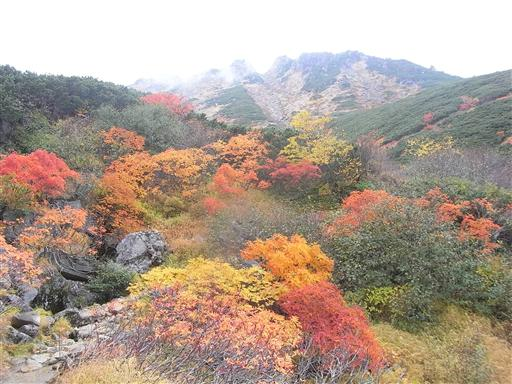
気の早いこの株は実だけ残して葉は全て落としてしまっている。
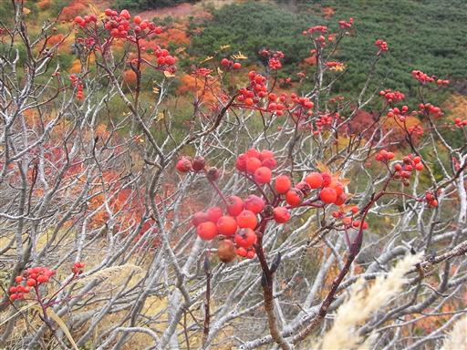
雲の中ではないので視界はそこそこ開けているが、
眼下も上空も雲に覆われている。
天気予報によると今日の天気は快晴のはずだったのだが…
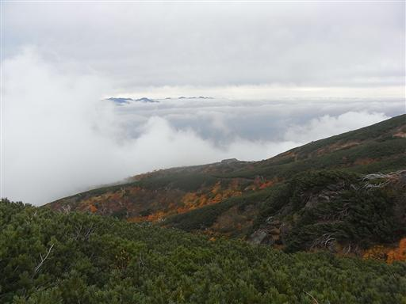
ガレた沢を渡る。反対方向から来た人は渡るのに苦戦している。
あまり山には慣れていないのだろう。
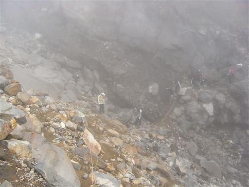
稜線が見えてきた。
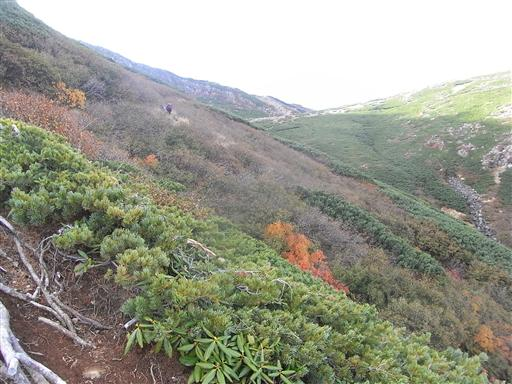
三ノ池避難小屋に到着。
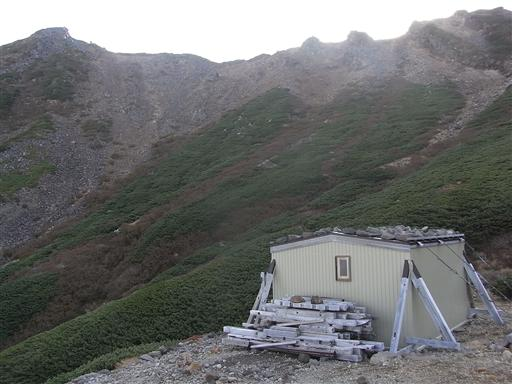
避難小屋の中は床板がない。
どのように使用されることを想定しているのかよく分からない小屋だ。
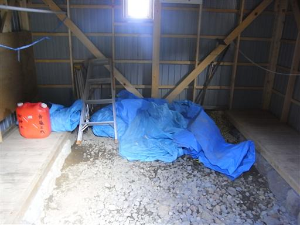
小屋のすぐ近くには大きな三ノ池がある。
水深は最深部で13mと山の中にある湖としては非常に深い。
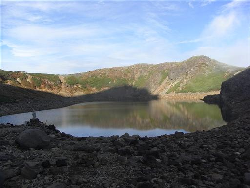
噴火口跡である湖を取り囲む縁に沿って歩いていく。
五の池小屋はもうすぐだ。
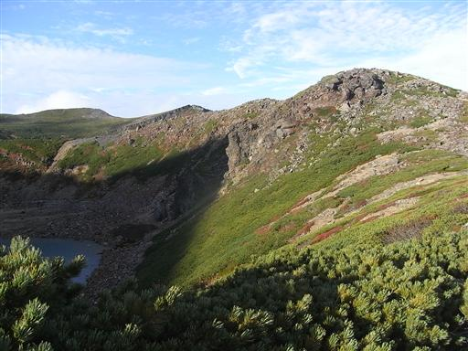
もうすでに森林限界を超えているので、落葉樹は見られない。
辺り一面ハイマツの海だ。
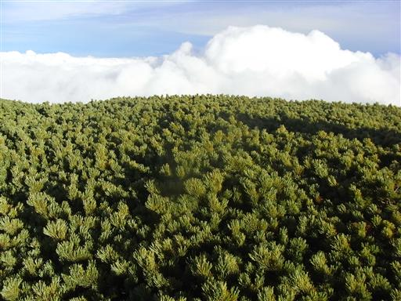
眼下に広がる雲に山の影が映っている。
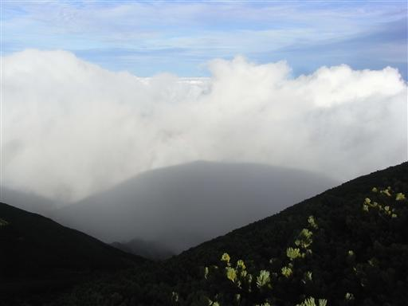
登り始める時間が遅かったので、もうすでにだいぶ日は傾き、影は大きく伸びている。
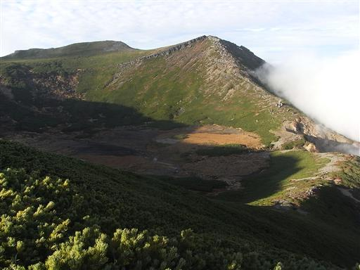
16:14 五の池小屋到着。標高2800m。
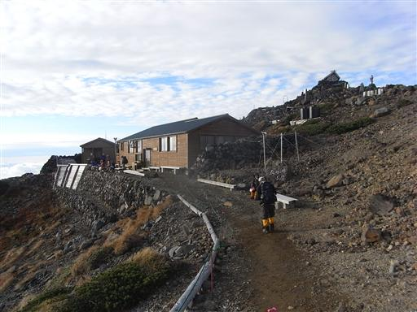
西に広がる空は雲の海だ。
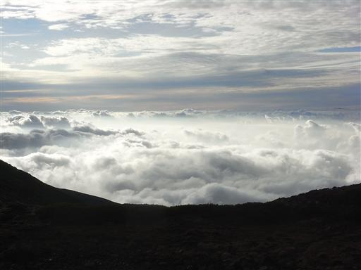
今日は小屋が混雑していて、布団2枚に3人という状態。
それほどぎゅうぎゅうではないが、今シーズン一番の混雑だと小屋の人が言っていた。
山頂部の小屋で開いているのはもうこの小屋だけなので、ここに登山者が集中しているようだ。

夕食前に外を見ると、西の空に太陽が沈もうとしている。
右に小さく見える山は白山。
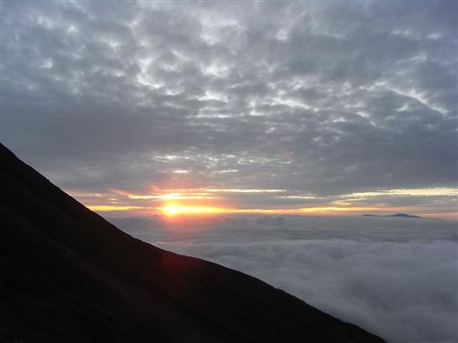
太陽が沈んだ後、西の空一面が赤くなり、赤い光の柱が現れた。
太陽柱と呼ばれる現象らしい。
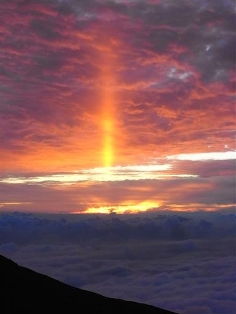
あまりにも寒いので長時間外にいるのは無理。
小屋の中ではストーブが焚かれている。
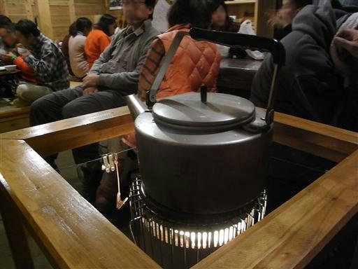